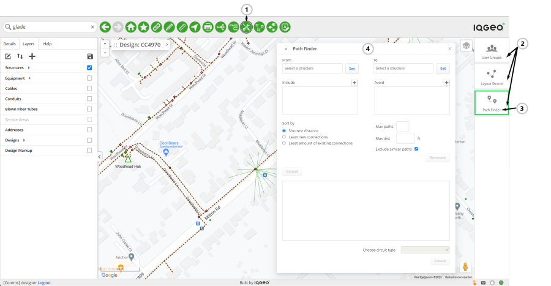
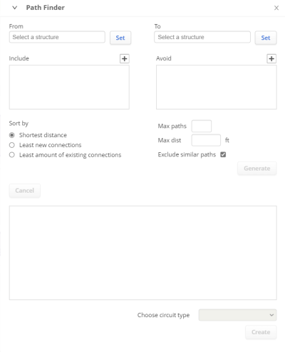
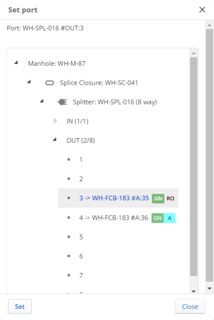
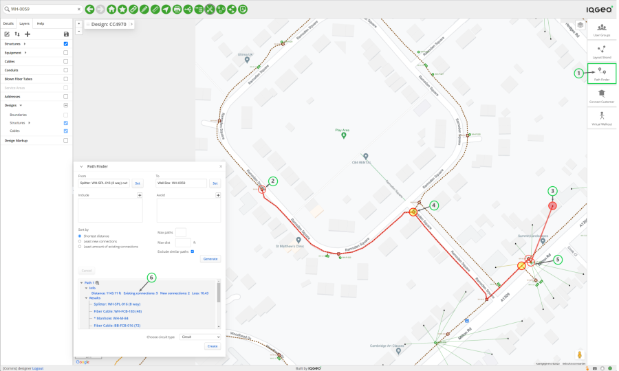
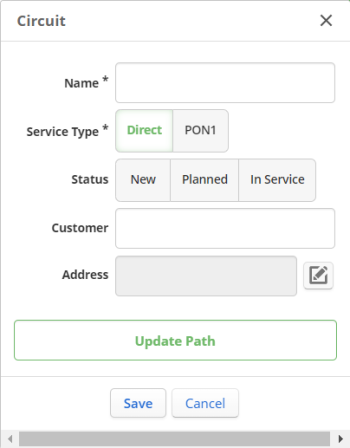
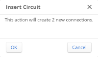

Finding paths between structures
The Path Finder feature allows you to search the available paths between two structures you select in a design. You can view details of the found path(s) and if the paths relate to a fiber cable, then select one to create a circuit from it.
To activate the Path Finder feature:
-
Open a design.
In the Designer role, this is required to obtain access to the Path Finder function.
-
Click the Tools Palette icon to open the tools shown on the right side of the map.

Figure: Tools Palette > Tools
Item Description 1 Tools Palette icon 2 Tool buttons 3 Path Finder button 4 Path Finder dialog
-
Click the Path Finder icon.
The Path Finder dialog is displayed. You can move the dialog window around in the Network Manager application window and you can collapse and expand it as required.

Figure: Path Finder dialog
Performing a path finder operation
Basic Settings
You must start by providing the basic settings for the operation.
-
Specify the structure to start from in the From field.
-
Select the structure directly on the map or use the Search tool to locate it.
-
Click the Set button next to the From input field.
The Set Port dialog appears.

Figure: Set Port dialog
-
Expand the information tree up to the level of the port that you want to use as the starting point and click on it to select it.
-
Click the Set button.
The name of the selected port appears in the From input field.
-
Specify the target structure in the To field.
-
Select the structure directly on the map or use the Search tool to locate it.
-
Click the Set button next to the To input field.
The name of the selected structure appears in the To input field.
For the structure at the end location you do not have to set a specific port beforehand, but it is best to verify if ports are available to avoid that the operation terminates with the message that there is no port at the end location.
Additional settings
You can provide additional settings, if appropriate, using the other fields in the Path Finder dialog.
-
Provide the names of certain elements in the design that must be included in the paths that you want to find.
-
Select a structure or a route or a piece of equipment and click the + button at the top right of the Include field.
-
Provide the names of specific elements in the design that must be avoided in the paths that you want to find.
-
Select a structure or a route or a piece of equipment and click the + button at the top right of the Avoid field.
-
Supply the generic settings about the paths to be brought up.
You can indicate:
Max paths : The maximum number of paths you want to be produced.
Max dist : The maximum length of the paths to be produced.
Whether you want to Exclude similar paths : Select this option if you do not want multiple paths that overlap for most part.
-
Indicate how the results need to be sorted in the progress and results pane at the bottom of the dialog window.
You can select one of these sorting criteria:
Shortest distance : If you prefer to see the shortest paths appear at the top of the results list.
Least new connections : If you prefer to see the paths that require the least new connections at the top of the results list.
Least amount of existing connections : If you prefer to see the paths that include the lowest number of existing connections at the top of the results list.
-
Click Generate to start the search for the available path(s).
The operation starts and progress information appears in the progress and results pane at the bottom. When Path Finder has completed its search, the result also appears in that pane.
The direct feedback you obtain as a Designer from Path Finder allows you to monitor the operation that you have launched; if you need to monitor and / or manage the Path Finder task queue at a higher level (for example. as an Administrator), you can use the comms_db command-line Tool to do so. If you are an Administrator, refer to the comms_db Command-line topic in the Installation and Configuration Guide.
Assessing the outcome of a Path Finder operation
Path Finder does not necessarily produce a path or a list of paths. There can be different reasons for this. To determine if usable paths are available, Path Finder works in two phases:
-
First, it looks for route paths between the start and the end location.
-
And, subsequently, looks for fiber paths using those route paths.
With the data gathered during these two phases, it can construct and present the possible paths. Typical reasons why no paths can be produced are:
-
End location has no ports : As mentioned above, no paths can be established if the structure at the end location does not have ports available.
-
No route paths found : Path Finder's search for route paths did not yield (usable) results. This can also occur if you have set the Max dist parameter and route paths exceed this distance.
-
No paths found : Path Finder was not able to detect any end to end path between start location and end location.
If Path Finder can generate paths between the two selected structures, it displays the result in the Path Finder dialog, as well as on the map.

Figure: Path Finder results displayed in Path Finder dialog and on map
Item Description 1 Route generated by Path Finder 2 Structure at start location 3 Structure at end location 4 Existing connection 5 New connection to create
6 Detailed information on path(s) found.
In the results pane of the dialog, the information about path(s) is presented in a fixed format comprising these items:
-
The identification of the path in the form "Path n" with 'n' a sequence number starting at 1 and incrementing for each subsequent path in the list.
-
The Zoom icon, which allows to highlight the path on the map.
-
The Info, which indicates the length of the path, the number of existing connections that are part of the path, the number of new connections that need to be created should this path be used to create a circuit and the optical loss occurring along this path.
-
The Results, which consists of an overview of all the objects that are part of the path.
To assess the path(s) that Path Finder brought up, you can step through the information in the results pane, which interacts with the map. If you click the Zoom icon next to the path name, the map zooms to the path concerned. The selected path is displayed in red. All network objects that are part of the path are presented and highlighted on the map, and the connections that are part of it, are marked with a circle. Additionally, for new connections, the inside of that circle is highlighted in yellow.
If you hover an object in the Results overview, a pop-up window appears with a set of key characteristics of the object. At the same time, the object is highlighted on the map.
Creating a circuit along a path
If the path relates to fiber cable, you can create a circuit along the path.
To create a circuit:
-
Select the path that you want to use in the Results pane of the Path Finder dialog.
-
Choose the circuit type that you want to create from the list at the bottom of the dialog window.
Circuit types are set in the Comms Settings configuration page (see the Installation and Configuration Guide).
-
Click Create to generate the circuit.
The Circuit dialog appears.

Figure: Circuit dialog
-
Enter the details for the circuit you are creating.
The Name and the Service Type are mandatory fields.
-
Click Save.
If new connections are to be created, the Insert Circuit dialog appears, prompting for your approval to the creation of these new connections.

Figure: Insert Circuit dialog
-
Click OK to confirm.
The circuit is created with all the equipment and connections required and is saved to the database.